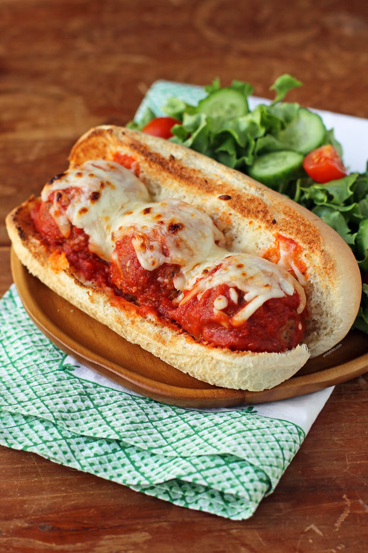

Meatball Sandwich

Meatball sub made with deliciously seasoned homemade meatballs,
tomato sauce, and melted provolone cheese served on a lightly
toasted baguette.
In need of a quick, easy, and comforting dinner? We have the
recipe for you: Let us introduce you to the best meatball sub
recipe on the internet. This saucy, cheesy, homemade meatball
sub is the perfect weeknight dinner that even the pickiest eater
at your table will love.
Ingredients
- 1 pound ground beef
- ¾ cup bread crumbs
- 1 large egg, beaten
- 2 cloves garlic, minced
- 2 tablespoons grated Parmesan cheese
- 2 tablespoons chopped fresh parsley
- 2 teaspoons dried Italian seasoning
- 1 French baguette
- 1 tablespoon extra-virgin olive oil
- ½ teaspoon garlic powder
- 1 pinch salt, or to taste
- 1 (14 ounce) jar spaghetti sauce
- 4 slices provolone cheese